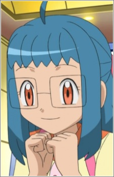
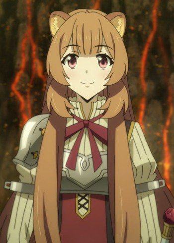

|
Atsumu Matsuyuki |
- Anohana: The Flower We Saw That Day
- Anohana: The Flower We Saw That Day Movie
|
Atsumu Matsuyuki or Yukiatsu is a childhood friend of Jinta, Naruko, Chiriko, Tetsudo, and Menma. He and Chiriko attend the same elite high school. Along with his friends, he is a member of Super Peach Busters. He holds a condesscending and hateful attitude towards Jinta Yadomi because of his crush. He becomes agitated whenever Meiko is mentioned and tries to hide that he is still distraught over her death. He is still trapped by the memory of Meiko(Menma). He secretly has a dark side to him from his affection for Meiko and his inferiority complex from childhood. Despite all of that, he is intelligent and excels in school. Asami Seto voiced younger Atsumu Matsuyuki. |
 |
Miyoko Houjou |
- Food Wars!
- Food Wars! The Third Plate
|
Miyoko Houjou is 92nd Tootsuki Generation student at Tootsuki Culinary School. She is a strong - willed person with the lust for battle. She takes a physical approach when dealing with problems. |
|  |
Nanette |
- Pokemon Black and White: Adventure in Unova
|
Nanette is a Beginner Pokemon Trainer in the Unova region with a starter Pokemon, Tepig. She is very anxious and fears that everything will turn out worse than the reality. |
 |
Officer Jenny |
|
Officer Jenny or Jennies work as police officers across the various regions in Pokemon world. Jennies are brave and determind. Certain Jenny can be discerned by the symbol on their hats. |
|  |
Raphtalia |
- The Rising of the Shield Hero
|
Raphtalia is a demi-human slave who was the first to joined Naofumi's party. At first she was shy, but now she more confidents. She is kind, caring and a strong warrior. She is extremely devoted to Naofumi and harbors his feelings. As she matures, she become more skilled in battle, but gets much bolder, opinionated, strong-willed and fiercely protective of Naofumi. She is a hero in her mind and to her race. |